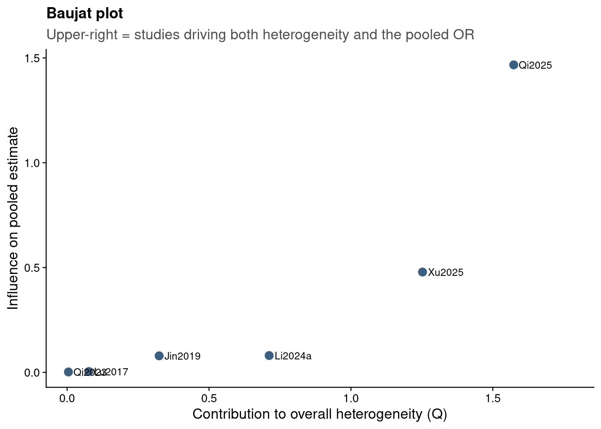
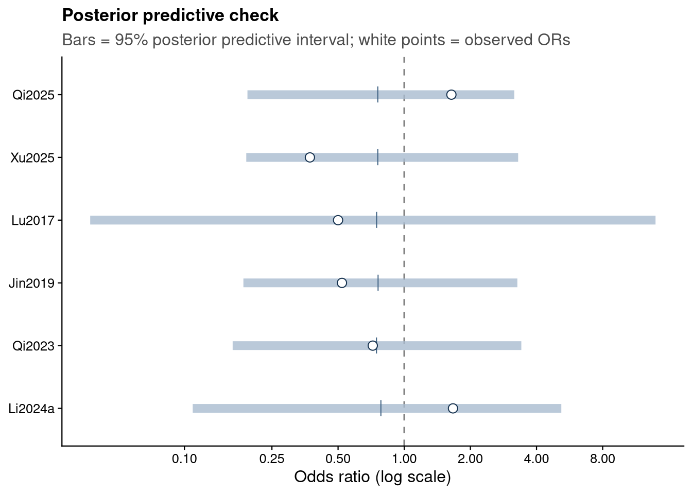

Show code
source("analysis/meta_helpers.R")
ma <- load_ma()
re <- rma(yi, vi, data = ma, method = "REML")
bm_sens <- fit_bm(ma)Preliminary, machine-assisted diagnostics pending human review. These check whether the random-effects model is an adequate description of the six source-verified studies.
The Bayesian and frequentist pages report the pooled effect; this page asks a different question — does the model fit the data? It pairs frequentist influence diagnostics with Bayesian posterior predictive checks.
ci <- confint(re)
pri <- predict(re, transf = exp)
tibble(
Statistic = c("Pooled OR (RE, REML)", "95% CI", "95% prediction interval",
"tau^2", "I^2 (%)", "H^2", "Q (df)", "Q p-value"),
Value = c(
sprintf("%.2f", exp(re$b[1])),
sprintf("%.2f to %.2f", exp(re$ci.lb), exp(re$ci.ub)),
sprintf("%.2f to %.2f", pri$pi.lb, pri$pi.ub),
sprintf("%.3f (95%% CI %.3f to %.3f)", re$tau2,
ci$random["tau^2", "ci.lb"], ci$random["tau^2", "ci.ub"]),
sprintf("%.0f (95%% CI %.0f to %.0f)", re$I2,
ci$random["I^2(%)", "ci.lb"], ci$random["I^2(%)", "ci.ub"]),
sprintf("%.2f", re$H2),
sprintf("%.1f (%d)", re$QE, re$k - 1),
sprintf("%.3f", re$QEp))
) |> knitr::kable()| Statistic | Value |
|---|---|
| Pooled OR (RE, REML) | 0.75 |
| 95% CI | 0.42 to 1.36 |
| 95% prediction interval | 0.26 to 2.23 |
| tau^2 | 0.215 (95% CI 0.000 to 2.045) |
| I^2 (%) | 42 (95% CI 0 to 87) |
| H^2 | 1.73 |
| Q (df) | 8.0 (5) |
| Q p-value | 0.156 |
Between-study heterogeneity is moderate (I² ≈ 42%) but imprecise, and Cochran’s Q is not significant. The prediction interval is far wider than the confidence interval — a new study’s true effect could plausibly fall on either side of no effect.
inf <- influence(re)
tibble(
Study = ma$study,
`Weight %` = round(as.numeric(weights(re)), 1),
`Std. residual` = round(inf$inf$rstudent, 2),
hat = round(inf$inf$hat, 2),
DFFITS = round(inf$inf$dffits, 2),
`Cook's D` = round(inf$inf$cook.d, 2),
`tau^2 (leave-1-out)` = round(inf$inf$tau2.del, 3),
Influential = ifelse(inf$inf$inf == "*", "yes", "")
) |> knitr::kable()| Study | Weight % | Std. residual | hat | DFFITS | Cook’s D | tau^2 (leave-1-out) | Influential |
|---|---|---|---|---|---|---|---|
| Qi2025 | 23.7 | 2.25 | 0.24 | 1.54 | 1.03 | 0.000 | yes |
| Xu2025 | 22.7 | -1.45 | 0.23 | -0.80 | 0.50 | 0.121 | yes |
| Lu2017 | 4.1 | -0.28 | 0.04 | -0.06 | 0.00 | 0.238 | |
| Jin2019 | 21.3 | -0.59 | 0.21 | -0.31 | 0.12 | 0.291 | |
| Qi2023 | 18.0 | -0.07 | 0.18 | -0.05 | 0.00 | 0.325 | |
| Li2024a | 10.3 | 0.88 | 0.10 | 0.30 | 0.09 | 0.232 |
png
2 bj$study <- ma$study
ggplot(bj, aes(x, y)) +
geom_point(size = 2.8, color = jama_blue_grey[["steel"]]) +
geom_text(aes(label = study), size = 3, hjust = -0.15) +
scale_x_continuous(expand = expansion(mult = c(0.05, 0.18))) +
labs(x = "Contribution to overall heterogeneity (Q)",
y = "Influence on pooled estimate",
title = "Baujat plot",
subtitle = "Upper-right = studies driving both heterogeneity and the pooled OR") +
theme_jama()
Qi2025 is the single influential study (Cook’s D ≈ 1.0, standardised residual ≈ +2.3); removing it collapses τ² to zero, so it is essentially the sole source of heterogeneity and the main pull toward the null. Xu2025 is its counterweight, contributing most of the apparent benefit. This mirrors the leave-one-out analysis.
We simulate replicated study results from the fitted Bayesian model and compare them with what was observed. If the model is adequate, observed odds ratios should sit comfortably within their posterior predictive intervals.
set.seed(5127)
D <- bm_sens$rposterior(n = 10000) # columns: tau, mu (log-OR scale)
ppc <- purrr::map_dfr(seq_len(nrow(ma)), function(i) {
theta <- rnorm(nrow(D), D[, "mu"], D[, "tau"])
yrep <- rnorm(nrow(D), theta, ma$sei[i])
pl <- mean(yrep <= ma$yi[i])
tibble(Study = ma$study[i],
`Observed OR` = exp(ma$yi[i]),
`PP 2.5%` = exp(unname(quantile(yrep, .025))),
`PP median` = exp(unname(quantile(yrep, .5))),
`PP 97.5%` = exp(unname(quantile(yrep, .975))),
`PPP (2-sided)` = 2 * min(pl, 1 - pl))
})
# Omnibus check on Cochran's Q (does the modelled heterogeneity match the data?)
w <- 1 / ma$vi
Qobs <- sum(w * (ma$yi - sum(w * ma$yi) / sum(w))^2)
Qrep <- vapply(seq_len(nrow(D)), function(j) {
theta <- rnorm(nrow(ma), D[j, "mu"], D[j, "tau"]); yr <- rnorm(nrow(ma), theta, ma$sei)
mfe <- sum(w * yr) / sum(w); sum(w * (yr - mfe)^2)
}, numeric(1))
q_ppp <- mean(Qrep >= Qobs)
ppc |> mutate(across(where(is.numeric), ~round(.x, 2))) |> knitr::kable()| Study | Observed OR | PP 2.5% | PP median | PP 97.5% | PPP (2-sided) |
|---|---|---|---|---|---|
| Qi2025 | 1.64 | 0.19 | 0.76 | 3.17 | 0.24 |
| Xu2025 | 0.37 | 0.19 | 0.76 | 3.30 | 0.28 |
| Lu2017 | 0.50 | 0.04 | 0.75 | 13.92 | 0.79 |
| Jin2019 | 0.52 | 0.19 | 0.76 | 3.27 | 0.58 |
| Qi2023 | 0.72 | 0.17 | 0.75 | 3.41 | 0.96 |
| Li2024a | 1.67 | 0.11 | 0.78 | 5.19 | 0.42 |
All six observed odds ratios fall within their 95% posterior predictive intervals, and no two-sided predictive p-value is extreme. The omnibus check on Cochran’s Q gives a posterior predictive p-value of 0.40, so the heterogeneity the model expects is consistent with the data.
ppc |>
mutate(Study = factor(Study, levels = rev(ma$study))) |>
ggplot(aes(y = Study)) +
geom_vline(xintercept = 1, linetype = "dashed", color = "grey50") +
geom_linerange(aes(xmin = `PP 2.5%`, xmax = `PP 97.5%`),
color = jama_blue_grey[["light"]], linewidth = 3, alpha = 0.8) +
geom_point(aes(x = `PP median`), shape = 124, size = 4, color = jama_blue_grey[["steel"]]) +
geom_point(aes(x = `Observed OR`), shape = 21, fill = "white",
color = jama_blue_grey[["accent"]], size = 2.8) +
scale_x_log10(breaks = c(0.1, 0.25, 0.5, 1, 2, 4, 8)) +
labs(x = "Odds ratio (log scale)", y = NULL,
title = "Posterior predictive check",
subtitle = "Bars = 95% posterior predictive interval; white points = observed ORs") +
theme_jama()
The random-effects model is an adequate fit: no individual study is poorly predicted and the modelled heterogeneity matches the data. The caveat is not misspecification but fragility — two influential studies (Qi2025 and Xu2025) pulling in opposite directions account for most of the heterogeneity and the location of the pooled estimate. With only six small observational studies, the synthesis remains inconclusive.